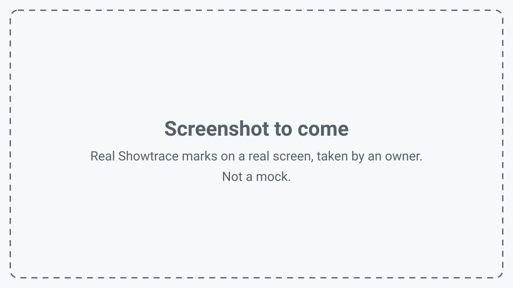

Mark any screen, live.
Draw, point and highlight on top of any application, in any call.
Showtrace puts marks on a live screen and keeps a record of each step: who did it, and why.
The live marks work today, as a beta. The record of steps, the trace, is planned.
What we see in our own teaching
A teacher shares a screen and wants to mark something on it. The pens built into the slide and meeting tools stop short: slides only, full screen only, a frozen picture, or ink that vanishes. So the teacher takes a screenshot, or stops to draw somewhere else. The lesson is interrupted, and the live screen is gone.
Afterwards the marks are gone too: frozen in a screenshot, or missing from the recording and from the slides shared with the class. The teacher explains the same thing again. The same happens in software training, demos and support.
The people watching put it like this, in our own lessons:
- "I don't know where to look, and I miss the action."
- "When the teacher stops to make a screenshot, I lose my place."
- "I see what happened but not why."
- "Afterwards I can't repeat it."
That is what we hear in our own teaching. It is not a finding from a study.
The live marks Today
The current build is a beta of the live marks. Everything in this list works today. Nothing in it is a plan.
-
Draw on the live screen
Pen, highlighter, line, arrow, rectangle, ellipse and text, on top of any application, on every monitor. Undo, redo and clear. The marks continue across monitors, including mixed scaling.
-
Point
A laser pointer with a fading trail that leaves no ink behind. A halo around the pointer, visible in recordings. A magnifier lens from 1.5x to 8x that locks in place with a click.
-
Fading ink
Marks that disappear on their own after 3, 8 or 20 seconds. Circle the click, and the circle goes away by itself.
-
Boards
A whiteboard, a blackboard, a light grid or a dark grid on one monitor, over the live screen. The screen marks come back when the board closes.
-
Screenshots with the marks
The full screen, or a region you drag, even across monitors. The marks and the boards are in the picture; the toolbar and the pointer are not. To the clipboard, to a folder, or both.
-
Explain and operate, in turns
One click puts you in draw mode. Escape returns the pointer from inside any application. Hold Ctrl+Alt to click through the marks for a moment.

The trace Planned
Show, don't tell. Live markup with lasting steps.
The marks are live today. The lasting steps are the trace, and the trace is planned: the build does not keep steps yet.
A trace is the record of one session: a numbered list of steps, in order. Each step says what was done, who did it, and why, in the author's own words. A viewer follows it afterwards without the video, and repeats the task. A reason that was not given is marked "not given", never made up.
A trace records what the operator chose to show the audience. It watches nobody.
- 1 Opens the File menu Reason: the export is under File.
- 2 Selects Export Reason: the file must be a PDF.
- 3 Saves the file as PDF Reason: not given.
Works with
Showtrace draws on top of the screen, so it works with the tools you already use: Zoom, Teams, Meet, OBS and Loom. The marks show in a whole-screen share or a display capture. A share of a single window does not include them.
Where this is going Phase 2
Phase 2 is a direction, not a plan. Nothing of it is scheduled.
More and more screens are operated on behalf of people: an AI agent clicks, types and navigates on someone's computer. The person whose computer it is becomes the audience, with the same questions a student has, and one more: "When an AI does it, I can't tell who did what."
The same layer serves that person, in one of two intents.
- Learn ("teach me")
- The AI goes slowly, marks each step on the live screen and states its reason. The trace keeps the steps, so the person can repeat them.
- Oversee ("just do it")
- Fast, but every action is marked on the live screen as it happens, so the person sees each one and can step in.
In the trace, an AI is an author of steps, next to a person. A person's step carries a filled dot and the person's name. An AI's step carries an open ring and the label AI, with the agent's name. The same for any vendor's agent. Showtrace does not operate the screen itself: it shows what another author did.
- 1 Opens the File menu Reason: not given.
- 2 Selects Export Reason: the file must be a PDF.
- 3 Saves the file as PDF Reason: the students get the PDF after the lesson.
Download
No public release yet.
The current build is a beta of the live marks. It runs on Windows 10 (version 1809 or later) and Windows 11, 64-bit, and needs nothing else. When a release is published, the download will be here.